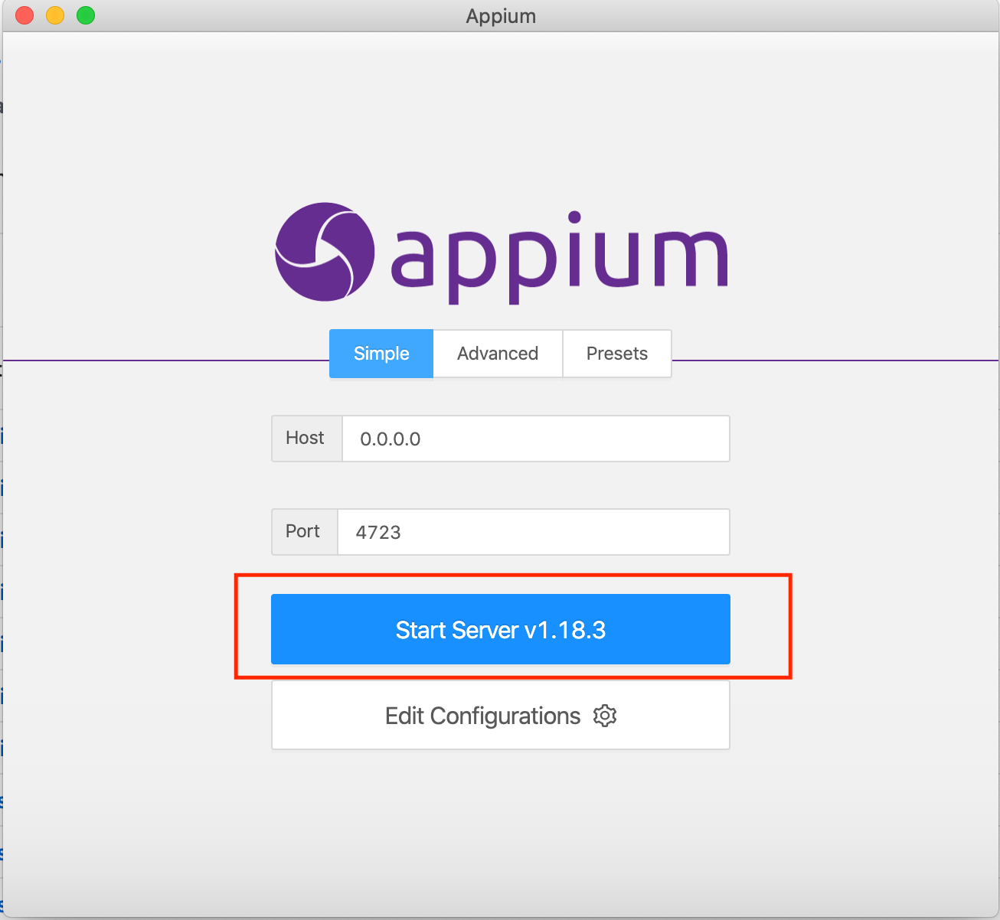
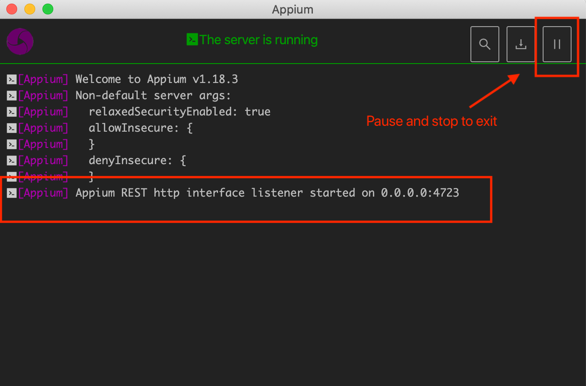
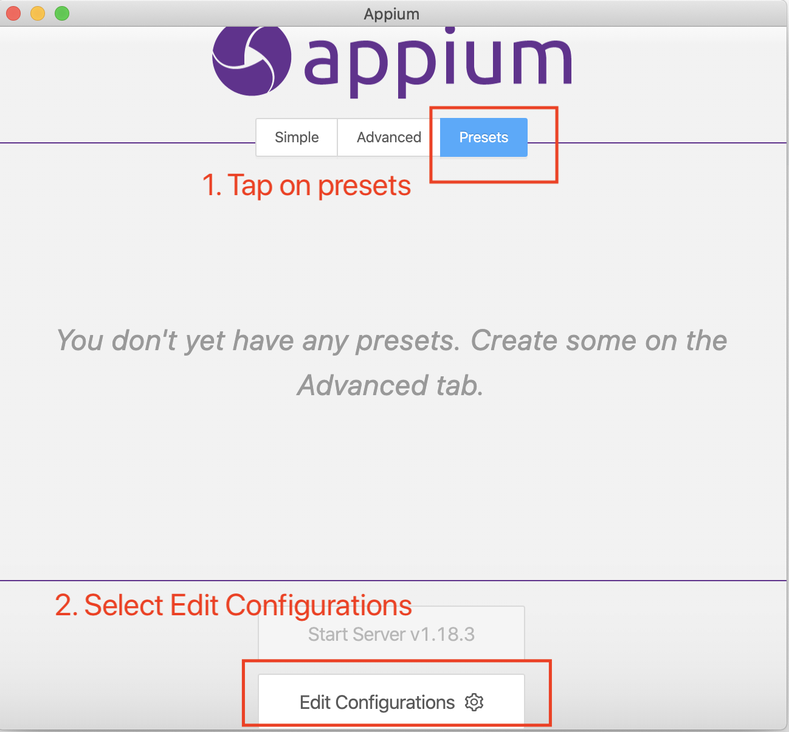
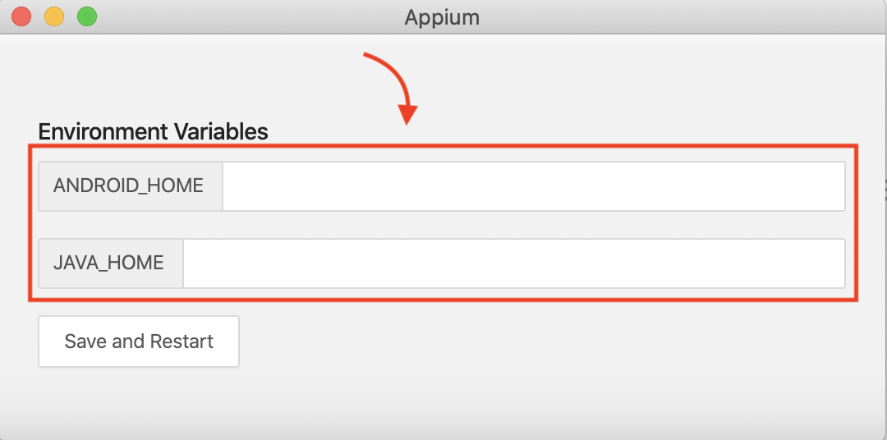
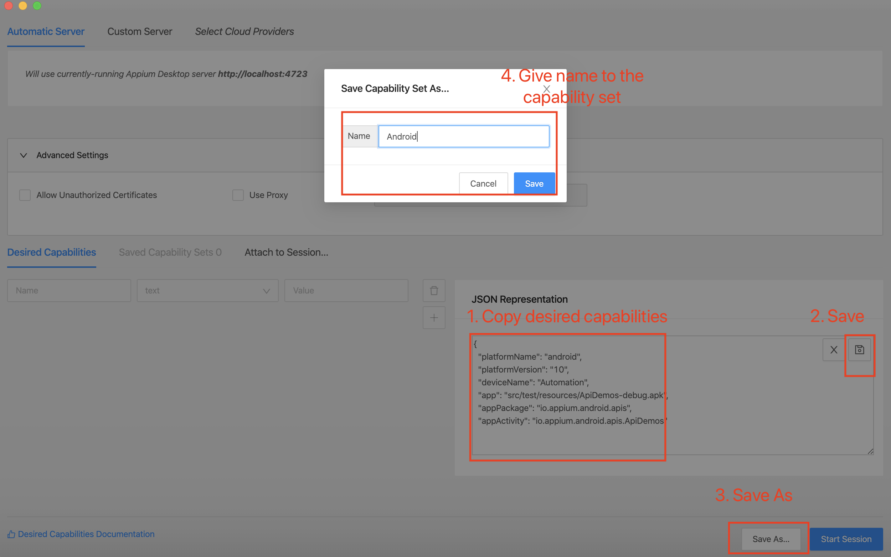
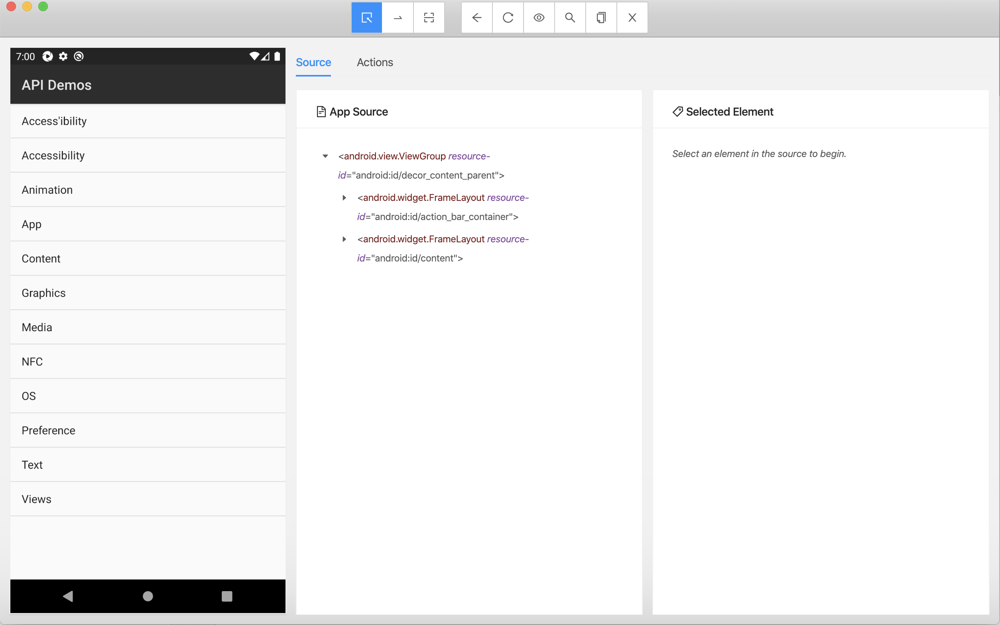

Appium Desktop 🖥️
Step 1: Download appium desktop
Appium desktop github releases for your platform
Step 2: Click on Start server

Verify server started correctly

Step 3: Adding Java and Android home
Select Presets > Edit Configuration

Add paths to JAVA_HOME and ANDROID_HOME variables
On mac
echo $JAVA_HOME
echo $ANDROID_HOME

Step 4: Adding capabilities
- Add capabilities JSON and then save it
- Also Save As with a familiar name

Sample capabilities
Android
{
"platformName": "android",
"automationName": "uiautomator2",
"platformVersion": "10",
"deviceName": "Automation",
"app": "/<absolute_path_to_project>/src/test/resources/ApiDemos-debug.apk",
"appPackage": "io.appium.android.apis",
"appActivity": "io.appium.android.apis.ApiDemos"
}
To find
appPackageorappActivity, you can follow a blog I wrote earlier Finding out package and activity name via adb for appium automation
iOS
{
"platformName": "iOS",
"automationName": "XCUITest",
"deviceName": "iPhone 12 Pro Max",
"app": "/<absolute_path_to_project>/src/test/resources/TestApp.app.zip"
}
For real device:
{
"bundleId": "<your_app_bundle_id>",
"automationName": "XCUITest",
"xcodeOrgId": "<your_team_name>",
"xcodeSigningId": "iPhone Developer",
"waitForQuiescence": false,
"useNewWDA": false,
"wdaStartupRetries": 2,
"resetOnSessionStartOnly": false,
"useJSONSource": true,
"shouldUseSingletonTestManager": false,
"wdaLaunchTimeout": "999999999",
"wdaConnectionTimeout": "999999999",
"autoAcceptAlerts": true,
"autoDismissAlerts": false
}
Step 5: Launch Appium Desktop or Appium Inspector to start investigating

Note: Appium project recently split Appium Desktop (Server + Inspector) into a separate inspector. Using this, you can run appium server via command line and just use inspector (It's also a light weight install). You can download the app from here